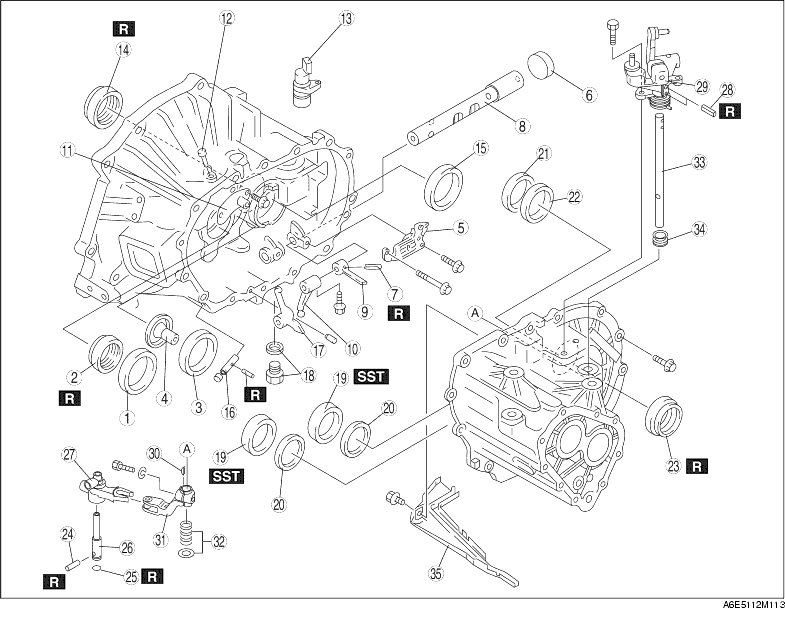

1. Disassemble in the order shown in the figure.

1. Remove the oil seal using screwdriver.
1. Remove the bearing race by lifting it and the funnel out together.
1. Align the groove for removal of the clutch housing pin with the position of the roll pin, then tap the pin out using a pin punch.
1. Move the control rod in the direction of arrow.
2. Using a flathead screwdriver and hammer, make a hole on the cap.
3. Pthe seal cap off, putting the flathead screwdriver into the hole, made in Step 2, from the inside of the transmission.
1. Remove the oil seal using the screwdriver.
1. Remove the oil seal using the screwdriver.
1. Remove the bearing outer race using the SST.
1. Remove the roll pin using pliers.
2. Protect the reverse lever shaft with a rag and use pliers to remove the shaft.
1. Remove the bearing race using the SST.